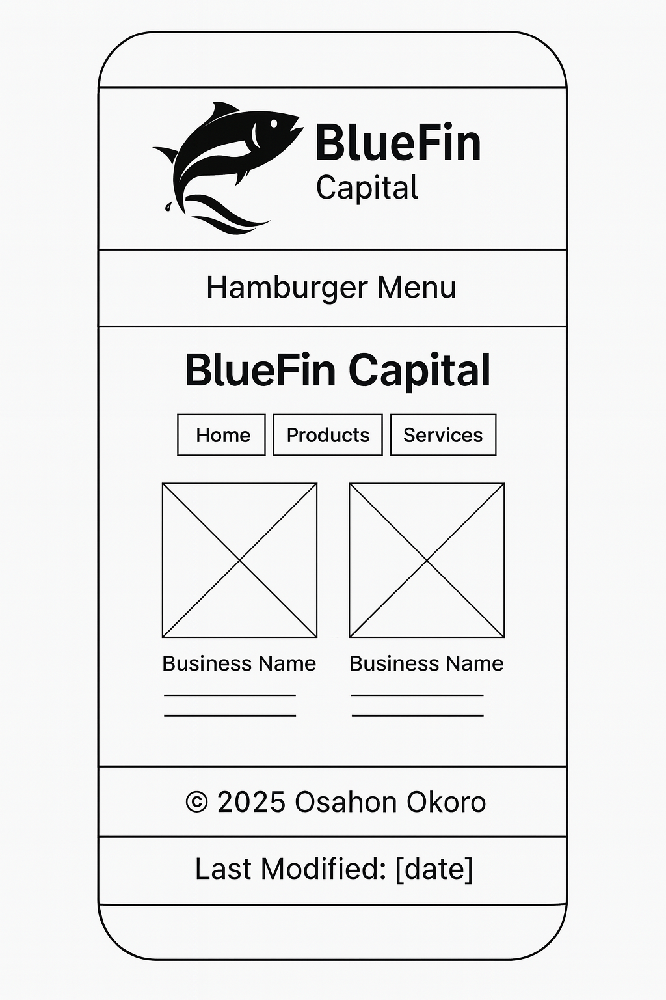
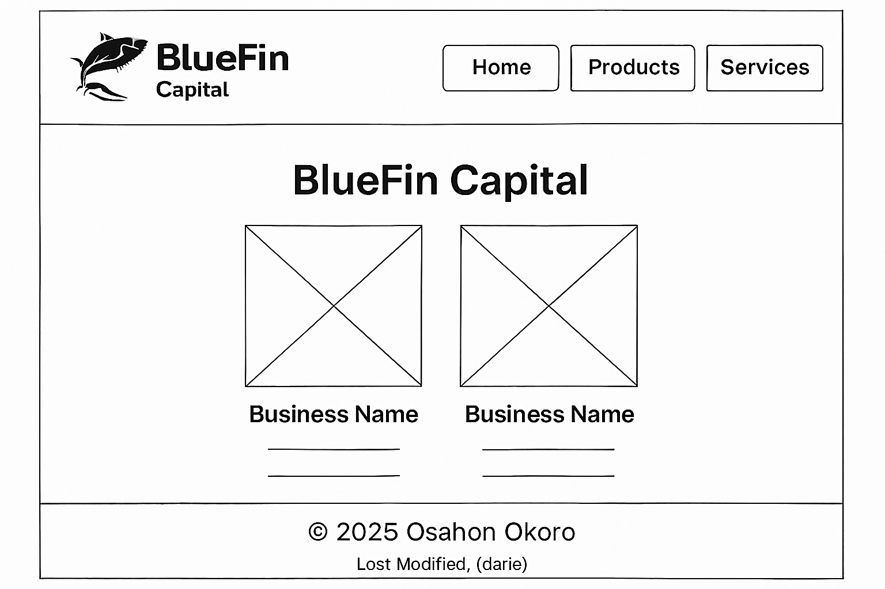

Site Name
BlueFin Capital is a professional aquaculture investment platform designed to help Nigerians in the diaspora securely invest in fish farming ventures through escrow-protected transactions and verified impact tracking.
Site Purpose
The site introduces BlueFin Capital’s fish farming investment model, explains how the escrow and verification system works, and outlines the farming cycle from funding to harvest. It emphasizes accountability by vetting not only transactions but also how purchased goods are used and how they contribute to the overall success of the farm.
Scenarios
- How do I know the fish feed I paid for was actually used for my investment?
- Can I see how past purchases contributed to the farm’s output or expansion?
- What kind of reports or updates will I receive about my investment?
Color Schema
- #0077b6 – Used for headers, buttons, and navigation background.
- #90e0ef – Used for backgrounds, highlights, and accents.
Typography
- Roboto – Used for body text and descriptions.
- Montserrat – Used for headings, navigation, and call-to-action buttons.
Wireframes
Below are wireframe sketches for the homepage layout:
Mobile View

Desktop View
